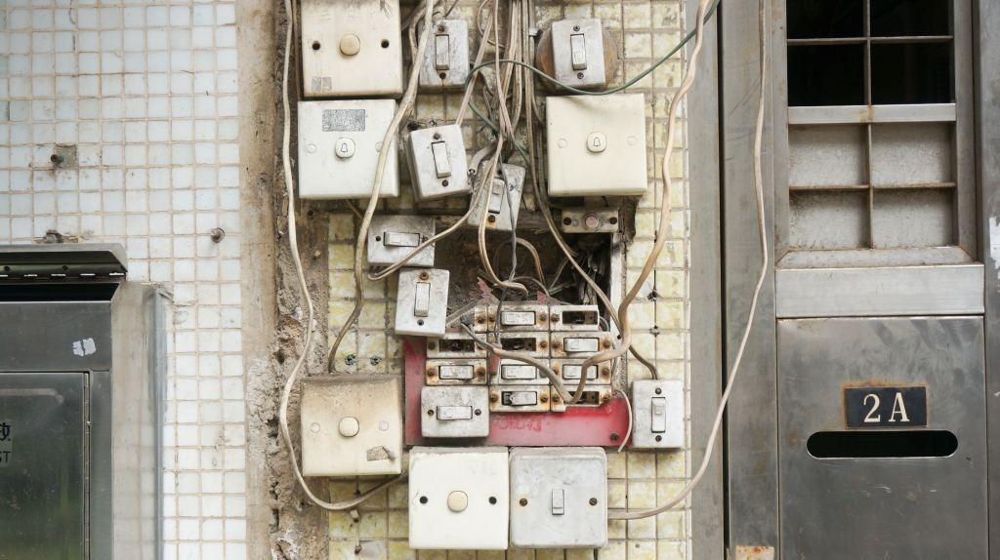
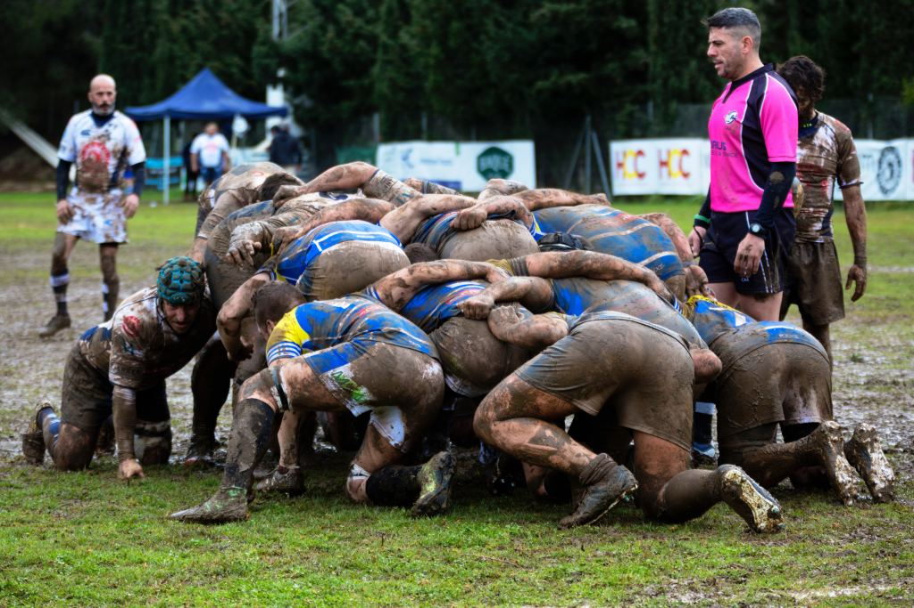

Project Management
Katherine Axel & Rich Daley
Six questions
- Who?
- What?
- Where?
- When?
- Why?
- How?
Kanban hierarchy
- Boards
- Lists
- Cards
- Checklists
Other Trello features
- Labels
- Assigning
- Due date
- Archive
- Powerups
- Keyboard shortcuts
Thoughts from Agile teams
Time = money
(and money = time)
Principle 12
Re-evaluate everything
Don't leave ownership unclear
Don't have woolly actions
& do something if they fail
Decision-making processes need to be clear
Don't forget to contingency-plan
Don't be optimistic about risk
Don't forget to agree comms methods
Don't avoid difficult conversations
Don't underestimate the role of people above you